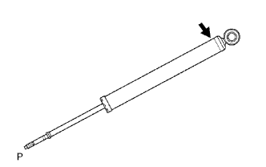

Shock Absorber Assembly Rear LH Disposal |
| 1. Dispose of Rear Shock Absorber Assembly LH |
 |
With the piston rod extended, secure the rear shock absorber assembly LH in a vise or equivalent.
Using a hacksaw or equivalent, slowly drill a hole at the position shown by the arrow in the illustration to release the gas.